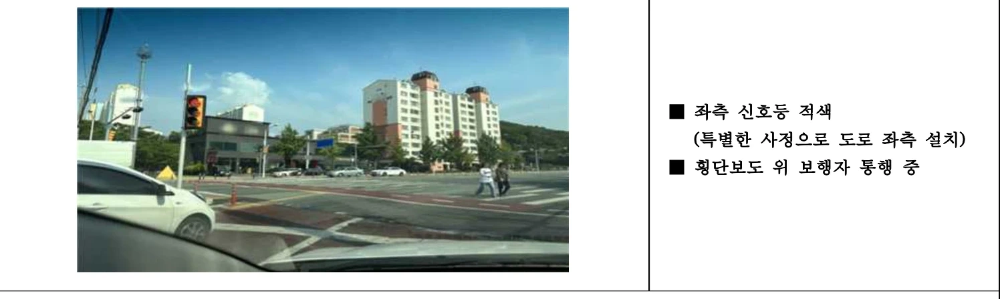

690. 다음과 같은 도로 상황에서 가장 안전한 운전방법 2가지는?

- ①차량 신호가 적색이므로 여유로운 마음을 가지고 기다린다.
- ②보행자가 느리게 통행 중이므로 경음기를 울려 신속히 건너도록 한다.
- ③원활한 차로변경을 위해 정지선을 넘어 옆 차 앞에 정차할 수 있다.
- ④원활한 교통 확보를 신호의 변화를 예측하여 급출발한다.
- ⑤정지선이 있으므로 반드시 준수하여 신호를 기다린다.
정답 보기
정답
① 차량 신호가 적색이므로 여유로운 마음을 가지고 기다린다.
⑤ 정지선이 있으므로 반드시 준수하여 신호를 기다린다.
근거·해설
도로교통법 시행규칙 별표2, 신호기가 표시하는 신호의 종류 및 신호의 뜻, 도로교통법 제27조(보행자의 보호) 제1 항. 모든 차 또는 노면전차의 운전자는 보행자가 횡단보도를 통행하고 있거나 통행하려고 하는 때에는 보행자의 횡단을 방해하거나 위험을 주지 아니하도록 그 횡단보도 앞(정지선이 설치되어 있는 곳에서는 그 정지선을 말한다) 에서 일시정지하여야 한다(②, ③, ⑤ 해설). 보도에서 갑자기 튀어나오는 보행자가 있을 수 있으므로 예측 및 급출 발은 위험한 운전방법이다(④ 해설).